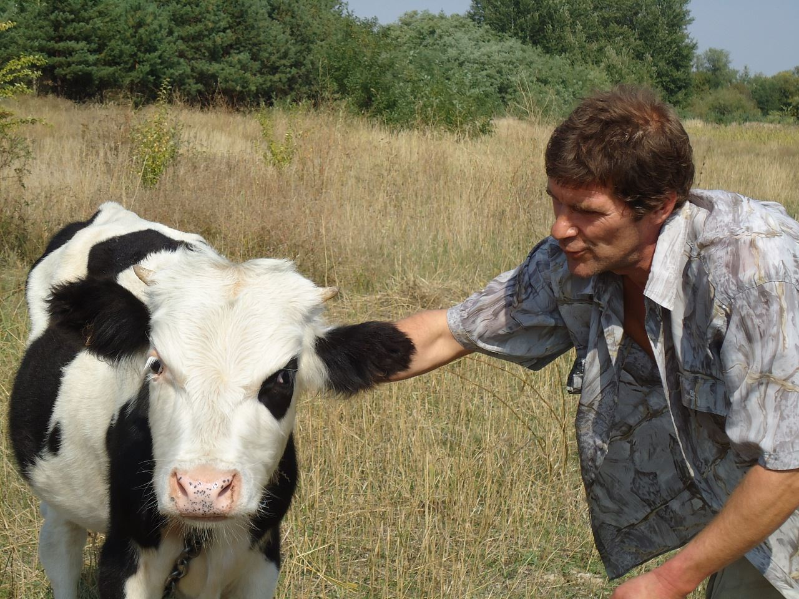
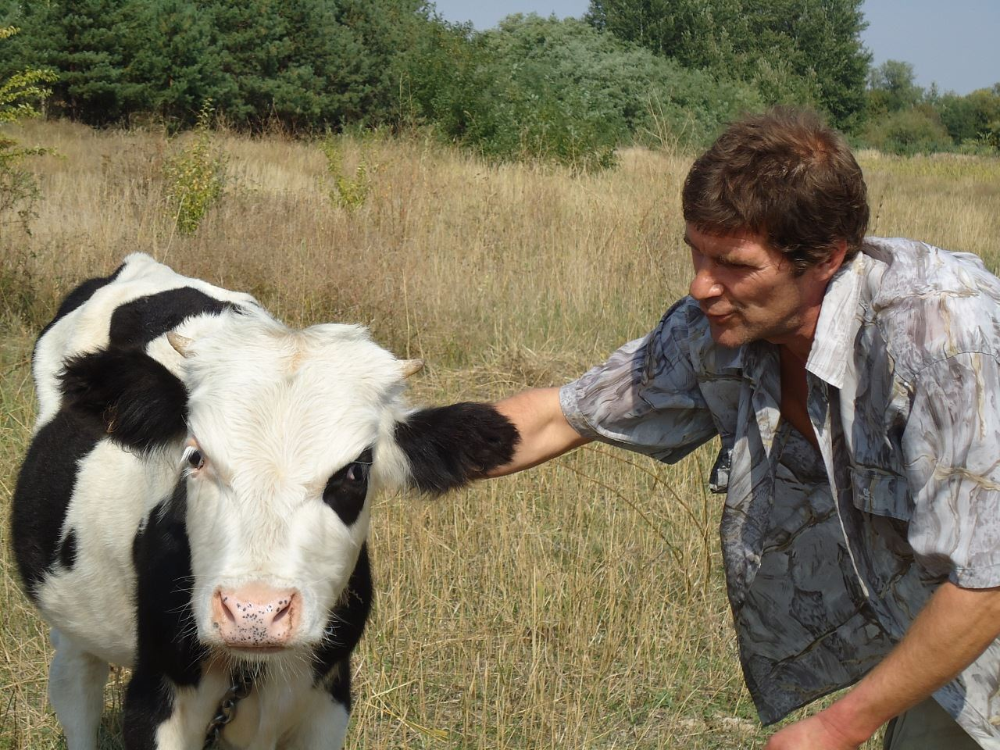
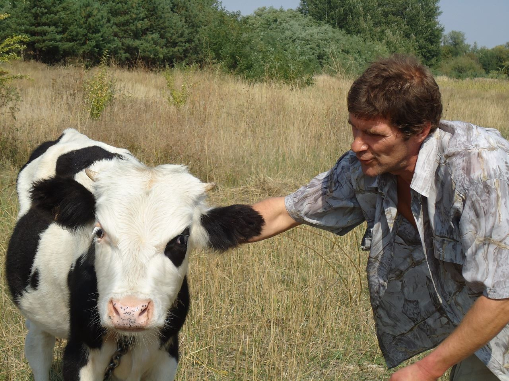

О проекте:
 

Данный проект создан с целью поддержки в информационном пространстве альтернативной, безубойной модели отношения к коровам и быкам
В настоящее время проект находится в разработке

Данный проект создан с целью поддержки в информационном пространстве альтернативной, безубойной модели отношения к коровам и быкам
В настоящее время проект находится в разработке